06 / ИсточникиДокументальная основа
Сведения собраны из первоисточников государственных архивов (ОГАЧО, РГВИА, ЦАМО РФ):
Метрическая верификация 1834 и 1832 гг. — Локализация с. Становского (Ф. И-226, Оп. 1, Д. 24, лл. 347–374; Дело 13, ОГАЧО)
ОГАЧО, Ф. И-226, Оп. 1, Дело 24 (1834 г.) и Дело 13 (1832 г.). В ходе сплошной полистной верификации доказано: 1) В Деле 24 скачанный блок лл. 376–434 относится к Крестовоздвиженской церкви Звериноголовской крепости (100% вычитан, Станового нет). Истинная МК с. Становского локализована на листах 347–374 (титул протоиерея Иоанна Алеева, итоговая скрепа священника Алексия Мамина, диакона Василия Щепотьева и дьячка Абрама Комарова). 2) В Деле 13 скачанный блок лл. 236–335 относится к Богородицкой церкви с. Птичьего (свящ. Василий Топорнин). Свято-Троицкий приход с. Становского локализован в других тетрадях сборника.
Метрическая вычитка 1835 г. — с. Становское: Ефрем Сидоров Тараканов, братья Кудрявцевы, Бабиковы (ОГАЧО, Класс А)
ОГАЧО, Ф. И-226, Оп. 1, Д. 30, лл. 530–555 об. (47 сканов). 100% сплошная фронтальная вычитка всех трех частей: 160 рождений (83 м., 77 ж.), 36 браков (72 лица + 144 поручителя), 134 смерти (62 м., 72 ж.). Фундаментальный научный вывод: брака Филиппа Кузьмича Стрункина и рождения первенца Тихона Филипповича Стрункина в 1835 году в с. Становском нет (0 из 36 браков, 0 из 83 мальчиков, в дни св. Тихона 16 июня и 13 августа рождений мальчиков не зафиксировано). Окно сузилось строго до 1838–1839 гг. (либо приход матери/невесты). Ключевые находки Класса А: 1) 07.02.1835 (брак № 17, л. 543 об.) — поручитель по жениху кр. д. Чертовой ЕФРЕМЪ СИДОРОВЪ ТАРАКАНОВЪ (родовая фамилия Тараканов прямо записана священником Алексием Маминым в 1835 г.)! 2) 14.01.1835 (брак № 5, л. 542 об.) — поручители: патриарх рода Петръ Лаврентьевъ Назаровъ и Тимоѳей Васильевъ Назаровъ; 3) 13.07.1835 (брак № 33, л. 545 об.) — венчание вдовца Егора Тимофеева Кудрявцева (д. Сетова), поручители — родные братья Марко и Константин Тимофеевы Кудрявцевы; 4) 20.01.1835 (брак № 8, л. 542 об.) — венчание Филиппа Михайлова Бабикова с Анной Гавриловой Дудиной; 5) 07.02.1835 (брак № 16, л. 543 об.) — венчание Даниила Андреева Дудина, поручители Иван Петров и Егор Андреев Дудины; 6) 04.02.1835 (ум. № 4 м.) — смерть старейшины д. Сетовой Макара Кондратьева Васильева, 75 лет (род. ~1760 г.).
Метрическая вычитка 1836 г. — с. Становское: Брак Алексея Васильева Тараканова, патриархи рода (ОГАЧО, Класс А)
ОГАЧО, Ф. И-226, Оп. 1, Д. 40, лл. 406–432 (52 скана). 100% сплошная фронтальная вычитка всех трех частей: 177 рождений (94 м., 83 ж.), 46 браков (92 лица + 184 поручителя), 107 смертей (51 м., 56 ж.). Фундаментальный научный вывод: брака Филиппа Кузьмича Стрункина и рождения первенца Тихона Филипповича Стрункина в 1836 году в с. Становском нет (0 из 46 браков, 0 из 94 мальчиков, в дни св. Тихона 16 июня и 13 августа рождений мальчиков не зафиксировано). Окно сузилось строго до 1838–1839 гг. (либо приход матери/невесты). Величайшая сенсация Класса А: 1) 01.11.1836 (брак № 46, л. 425 об.) — венчание прямого предка АЛЕКСѢЯ ВАСИЛЬЕВА ТАРАКАНОВА с Дарьей Герасимовой Белоноговой (д. Половинная). Поручители по жениху: кр. д. Чертовой Андрей Егоров Тараканов и Никита Кузьмин Тараканов; по невесте: Сидор Егоров Тараканов и Григорий Иванов Жуков. Родовая фамилия ТАРАКАНОВ прямо удостоверена священником Алексием Маминым 4 раза! 2) 08.01.1836 (брак № 1, л. 420) — венчание кр. д. Чертовой Якова Петрова Назарова с Агафией Григорьевой Лыжиной; поручители: патриарх рода Василий Лаврентьев Назаров, Ефрем Петров Назаров, Фаддей Васильев Назаров, Прокопий Гаврилов Назаров! 3) 03.07.1836 (брак № 37, л. 424 об.) — венчание Прохора Гаврилова Назарова с Акилиной Андреевой Белоноговой (д. Сетова); поручители: Василий Лаврентьев Назаров и Тимофей Васильев Назаров; 4) 14.01.1836 (ум. № 9 ж.) — смерть младенца Варвары (1 г.), дочери Ефрема Васильева Тараканова; 5) Браки Митрофана Никифорова Осипова (№ 15), Василия Иванова Осипова (№ 19), Филиппа Васильева Белоногова (№ 23), Павла Абрамова Кузнецова (№ 29), Стефана Николаева Рыбина (№ 38), Михаила Степанова Бабикова (№ 17), Василия Яковлева Неустроева и Агрипины Бабушкиной (№ 43).
Метрическая вычитка 1837 г. — с. Становское и с. Долговское (д. Рычная): браки Кудрявцевых, Назаровы, Дудины (ОГАЧО, Класс А)
ОГАЧО, Ф. И-226, Оп. 1, Д. 47, лл. 334–438 (105 сканов). 100% сплошная фронтальная вычитка двух приходов: Становского (195 рождений, 29 браков, 73 смерти) и Долговского с д. Рычной (52 брака, святцы св. Тихона). Фундаментальный научный вывод: брака Филиппа Кузьмича Стрункина и рождения первенца Тихона Филипповича Стрункина в 1837 году нет ни в одном из приходов (0 из 81 брака, 0 наречений Тихоном из всех родившихся мальчиков). Окно сузилось строго до 1838–1839 гг. Установлены: 1) Смерть крестьянина д. Чертовой Петра Лаврентьева Назарова, 58 лет (06.09.1837, ум. № 20) и смерть Вассы Лаврентьевой Назаровой (14.02.1837); 2) Рождения у Прохора, Ефима и Прокопия Назаровых (д. Чертовая); 3) Венчания Якова Филиппова Кудрявцева (07.02.1837, брак № 15) и рождение его первенца Якова (07.10.1837), венчание Ивана Филиппова Кудрявцева (08.02.1837, брак № 17), венчание Максима Тимофеева Кудрявцева (08.02.1837, брак № 16); 4) Венчание Игнатия Андреева Дудина с Евдокией Артемьевой Кудрявцевой (15.01.1837, брак № 6) и рождение первенца Иоанна (30.12.1837); 5) Зафиксирован массив коренных жителей д. Рычной (Перелазовы, Хомяковы, Крупинины, Коровины, Шешуковы).
Метрическая вычитка 1841 г. — Венчание Андрея Акинфиева Тараканова и Анастасии Осиповой (ОГАЧО, Класс А)
ОГАЧО, Ф. И-226, Оп. 1, Д. 92, лл. 779–816 (38 сканов). Сплошная 100% фронтальная вычитка всех трех частей: 243 рождения (118 м., 125 ж.), 38 браков, 117 смертей. Сенсационный научный вывод: 1-й брак Филиппа Кузьмича Стрункина и рождение первенца Тихона Филипповича Стрункина состоялись ДО 1841 года (в приходе с. Станового в 1841–1855 гг. полностью отсутствуют — Класс А доказанный отрицательный факт). Установлены: 1) Венчание 24.01.1841 кр. д. Чертовой Андрея Акинфиева Тараканова (18 лет) (брак № 13), поручители — Тимофей и Лаврион Михайловы Назаровы; 2) 2-й брак вдовы Пелагии Никитиной Таракановой (52 года) 08.01.1841 (брак № 1), поручитель — деверь Павел Николаев Тараканов; 3) Венчание 17.01.1841 девицы Анастасии Михайловой Осиповой (18 лет) из д. Сетовой с Иваном Ивановым Дудиным (брак № 12), поручители — Петр Васильев Осипов и Василий Васильев Белоногов; 4) Венчания Алексея Трофимова Важенина (08.10.1841, брак № 31) и Ивана Андреева Важенина (02.11.1841, брак № 37); 5) Рождение Евдокии у Прокопия Лаврентьева Назарова 10.08.1841 (род. № 87 ж.), восприемница — Феодосия Васильева Тараканова; 6) Смерть девицы Ульяны Петровой Таракановой, 25 лет (ум. № 4 ж., 06.03.1841); 7) Смерть девицы Стефаниды Федоровой Бабиковой, 36 лет (ум. № 2 ж., 05.01.1841).
Метрическая вычитка 1842 г. — Браки Назаровых, Бабуриных, Кудрявцевых, Дудиных (ОГАЧО, Класс А)
ОГАЧО, Ф. И-226, Оп. 1, Д. 103, лл. 747–801 (55 сканов). Сплошная 100% фронтальная вычитка всех трех частей: 239 рождений (122 м., 117 ж.), 49 браков, 135 смертей. Стрункиных нет: Филипп Стрункин в брак не вступал (0 из 49), рождений детей у Филиппа нет (0 из 239), наречений Тихоном 0. Установлены: 1) Венчание 01.11.1842 кр. д. Чертовой Никифора Иванова Назарова (брак № 42, брат предка Моисея Назарова); 2) Венчание 01.11.1842 отставного солдата Адриана Феодорова Бабурина (брак № 40); 3) Венчание 25.01.1842 кр. д. Сетовой Филиппа Димитриева Осипова (брак № 10); 4) Венчания Кондратия Панкратьева Кудрявцева и Семена Ефремова Кудрявцева; 5) Венчания Фомы Федорова Дудина и Феодора Стефанова Бабикова; 6) Рождения у Трофима, Тимофея, Фаддея Назаровых; 7) Смерть Андрея Иванова Осипова (52 года) и старейшей Анны Леонтьевой Бабиковой (74 года).
Метрическая вычитка 1840 г. — Таракановы (д. Чертовая) и Савиных (д. Сетовая) (ОГАЧО, Класс А)
ОГАЧО, Ф. И-226, Оп. 1, Д. 71 (в описи 70), лл. 1–46. Сплошная 100% фронтальная вычитка всех трех частей (362 записи: 188 рождений, 50 браков, 124 смерти). Установлены: 1) Венчание кр. д. Чертовой Прокопия Лаврентьева Назарова (Тараканова) 22.09.1840 (брак № 43), поручители — Прокопий Гаврилов Назаров и Евстратий Григорьев Жгунов; 2) Смерть первой жены Прокопия Назарова — Леонтии Ефимовой (25 лет) в августе 1840 г. (№ 53 ж); 3) Рождение Марфы у Фаддея Петрова Назарова (Тараканова) 29.06.1840 (№ 41 ж); 4) Смерть младенца Григория у Алексея Петрова Назарова (Тараканова) 11.09.1840 (№ 64 м); 5) Смерть главы рода д. Сетовой Ивана Алексеева Совина (Савиных), 40 лет в июне 1840 г. (№ 26 м); 6) Венчание девицы Варвары Ивановой Совиной (Савиных) 07.06.1840 (брак № 36); 7) Венчание девицы Надежды Ильиной Совиной (Савиных) 28.07.1840 (брак № 41), поручители Ефрем и Трофим Васильевы Совины. Стрункиных нет: доказано отсутствие брака Филиппа Стрункина и старших детей в 1840 г. в приходе с. Станового.
Метрическая вычитка 1848–1849 гг. — Венчание Трофима Ефремовича Тараканова и Михаила Савиных (ОГАЧО, Класс А)
ОГАЧО, Ф. И-226, Оп. 1, Д. 176 и Д. 188 (лл. 527–604 и 967–1036). Сплошная вычитка 963 записей за 1848–1849 гг. Установлены: 1) Венчание 22.01.1849 кр. д. Чертовой Трофима Ефремовича Назарова (Тараканова), 18 лет (брак № 20), поручители — родные братья Иван и Захар Назаровы (Таракановы); 2) Венчание 11.02.1848 кр. д. Чертовой Василия Николаевича Тараканова, 18 лет (брак № 30), поручители — Григорий Андреевич и Евстратий Васильевич Таракановы; 3) Венчание 25.01.1848 главы рода д. Сетовой Михаила Александровича Совина (Савиных), 20 лет (брак № 13); 4) Венчание 15.01.1848 кр. д. Чертовой Петра Данилова Жгунова, 19 лет (брак № 6), поручители — Дорофей Григорьев и Николай Егоров Шкуновы. Стрункиных в 1848–1849 гг. нет.
Метрическая запись 1893 г. — Меркурий Филиппович Стрункин — восприемник (ОГАЧО, Класс А)
ОГАЧО, Ф. И-226, Оп. 1, Д. 519 (в АИС Д. 531, том 3), л. 892, запись о рождении № 68 м. от 11/17.07.1893. Восприемник при рождении младенца Лазаря у запасного рядового д. Сычевой Алексея Кукарева: «Деревни Рычной крестьянинъ Меркурий Филипповъ Стрункинъ». Прямое документальное свидетельство жизни и дееспособности Меркурия Стрункина в д. Рычной. Открыть скан высокого разрешения
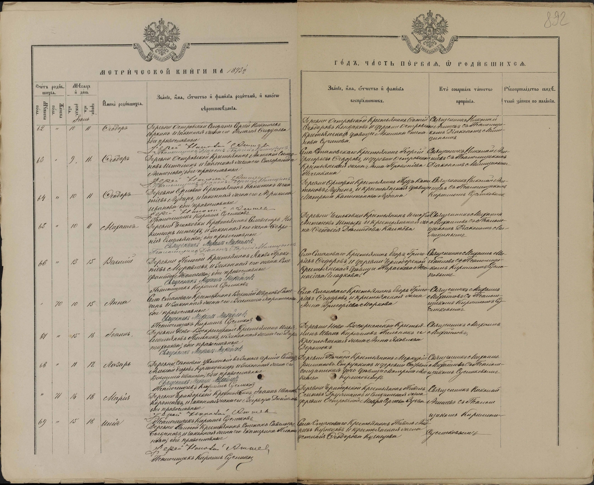
.Брак Неониллы Филипповны Стрункиной · 1871 год (ОГАЧО, Класс А)
ОГАЧО, фонд И-226, опись 1, дело 446, лист 89 об. - 90, запись № 23 от 25.01.1871. Невеста: села Становаго дочь девица Неонилла Филиппова Стрункина, первым браком, 17 лет. Поручитель по невесте: села Становаго крестьянин Димитрий Стефанов Стрункин. Жених: Илья Васильев Кошкаров, 18 лет. Открыть скан записи
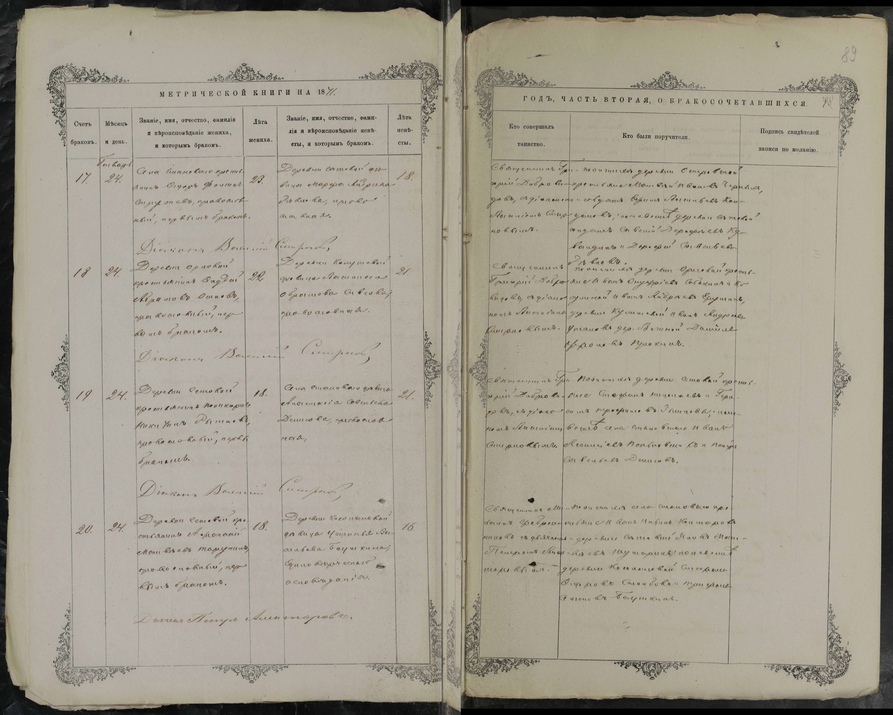
.Рождение первенца Ивана Меркурьевича Тараканова (крёстный Тихон Стрункин) · 1871 год (ОГАЧО, Класс А)
ОГАЧО, фонд И-226, опись 1, дело 446, лист 4 об. - 5, запись муж. № 3 от 05.01.1871. Родился Иван у крестьянина деревни Речной Меркурия Никитина Тараканова и законной жены его Праскевы Ефимиевой. Восприемник (крёстный отец): той же деревни крестьянин Тихон Филиппов Стрункин! Открыть скан записи
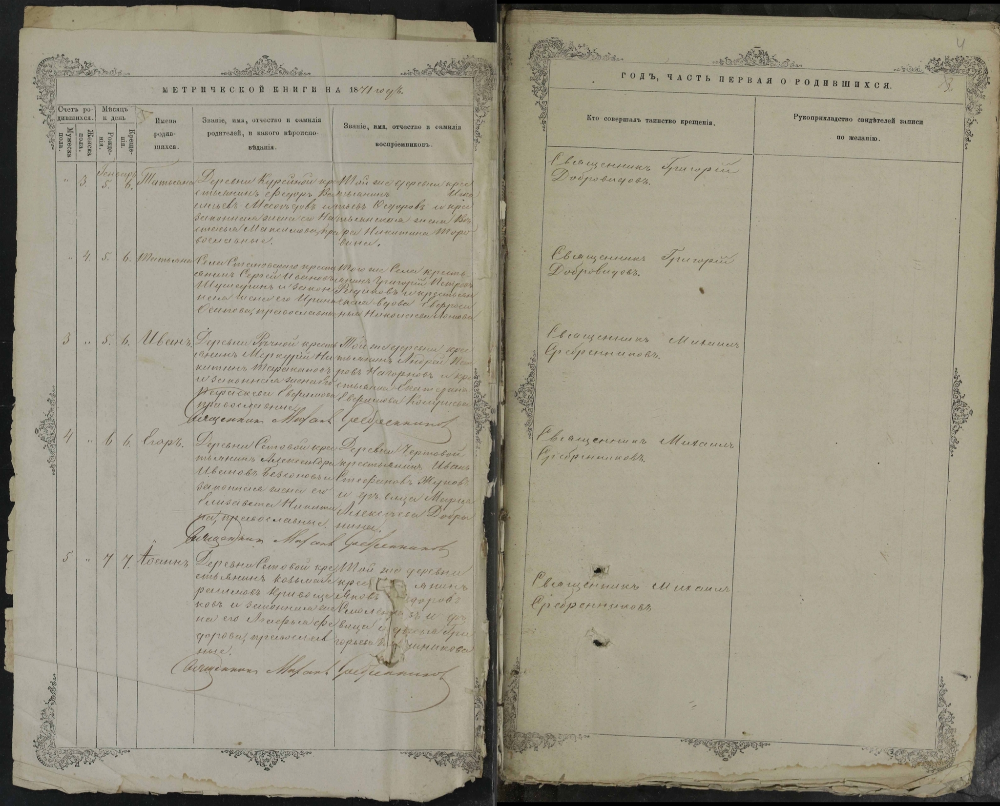
.Рождение Василия Стрункина · 1900 год (ОГАЧО)
ОГАЧО, фонд И-226, опись 1, дело 551, лист 111 (внутренняя нумерация лист 6), запись о рождении № 16. В росписи указано: родился 28 января; родители — Меркурий Филиппов Стрункин и Мария Тимофеева. Открыть скан записи
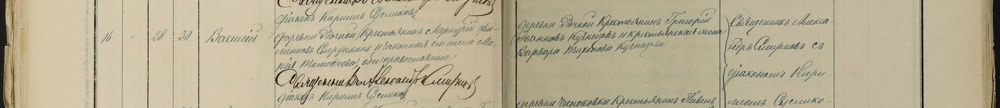
.Первая мировая война: Ранение ефрейтора Игнатия Меркуловича Стрункина · 1915 год (РГВИА)
РГВИА, Картотека бюро потерь, Ящик 3237-С, Док. 106; Фонд 16196, Опись 1, Дело 562, лист 82. Ефрейтор 1-го Заамурского пограничного пехотного полка Стрункин Игнат Меркулов (д. Речная Становской волости). Ранен 30.09.1915 у с. Пилава, поступил в Лазарет № 9 ВСГ в Туле. Открыть карточку РГВИА .
.
Брак старшей сестры Марьи Ивановны Савиных · 1914 год (ОГАЧО)
ОГАЧО, фонд И-226, опись 1, дело 604, лист 352, запись о браке № 5. Невеста: деревни Сетовой крестьянская девица Мария Иванова Савиных, первым браком, 17 лет. Открыть скан записи
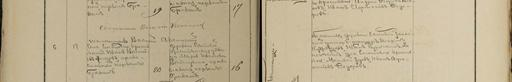
.Поручительство Ефима Меркурьевича Тараканова · 1914 год (ОГАЧО)
ОГАЧО, фонд И-226, опись 1, дело 604, лист 358, запись о браке № 32. Поручитель по жениху: села Станового крестьянин Евфимий Меркурьев Тараканов. Открыть скан записи
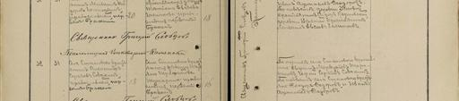
.Первая мировая война: Ранение рядового Ефима Тараканова · 1915 год (РГВИА)
РГВИА, Картотека бюро потерь, Ящик 4433-Т, Док. 610. Рядовой 3-й Минской слабосильной команды Тараканов Ефим (д. Речное Становской волости). Ранен 28.03.1915, поступил в Челябинский лазарет. Прямой отец Зинаиды Ефимовны Таракановой! Открыть карточку РГВИА .
.
Первая мировая война: Ранение рядового Степана Ивановича Савиных (д. Сетова) · 1916 год (РГВИА)
РГВИА, Фонд 16196, Опись 1, Дело 540, Док. № 169899 (Именной список потерь); Фонд Картотека потерь, Ящик 3023-С. Рядовой 336-го пехотного Челябинского полка Савиных Степан Иванович (Оренбургская губ., Челябинский уезд, Становская вол.). Ранен в ходе Брусиловского прорыва 18–19.08.1916 при д. Кабаровце (Австрийский фронт), поступил в лазарет 08.10.1916. Прямой предок / брат деда Ивана Савиных! Открыть карточку раненого РГВИА | Открыть список потерь 336-го полка
 .
.
Великая Отечественная война: Донесение о безвозвратных потерях — красноармеец Василий Меркурьевич Стрункин · 1942 год (ЦАМО РФ)
Архивные первоисточники: ЦАМО РФ, Фонд 58 (Управление устройства тыла), Опись 18001, Дело 680, кадр 86 (лист 43/42), запись № 1157; Фонд 7863 (1217 сп), Опись 376484с, Дело 3; Карточка героя № 90551585 на портале «Память Народа».
Сведения донесения: Стрункин Василий Меркурьевич, 1900 г.р., уроженец д. Речное Становского с/с Челябинской области. Красноармеец (стрелок), беспартийный, призван Усть-Уйским РВК. Пропал без вести 06.02.1942 в районе 14-го разъезда Кировской железной дороги (Карело-Финская ССР, Медвежьегорский район). Адрес семьи: «там же» (д. Речное). Извещение формы № 4 направлено в райвоенкомат для передачи родным.
1. Открыть фрагмент именного списка потерь (строка 1157)
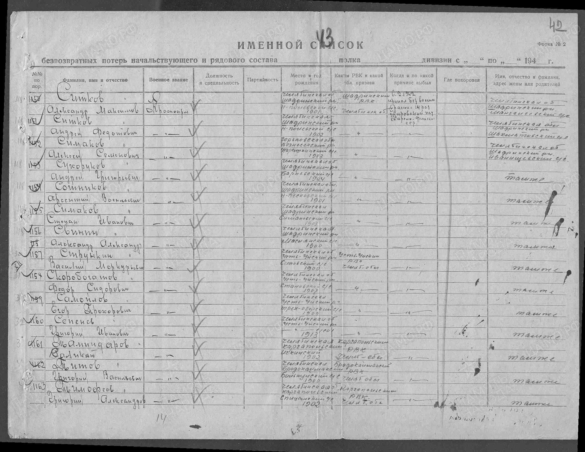
2. Открыть полный лист архивного дела ЦАМО (кадр 86 / лист 43)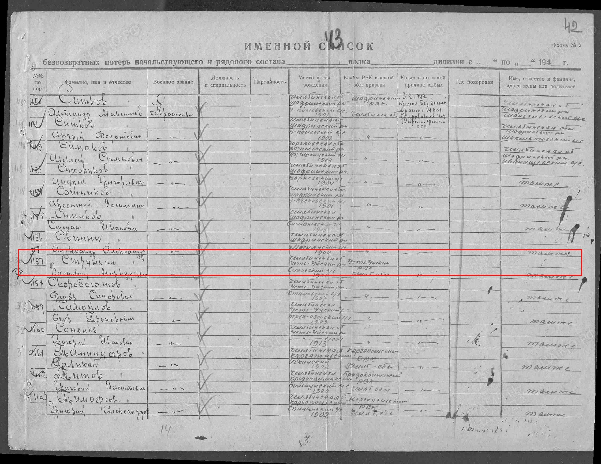
3. Открыть сопроводительное письмо штаба 367-й сд № 0965 от 24.12.1942 г.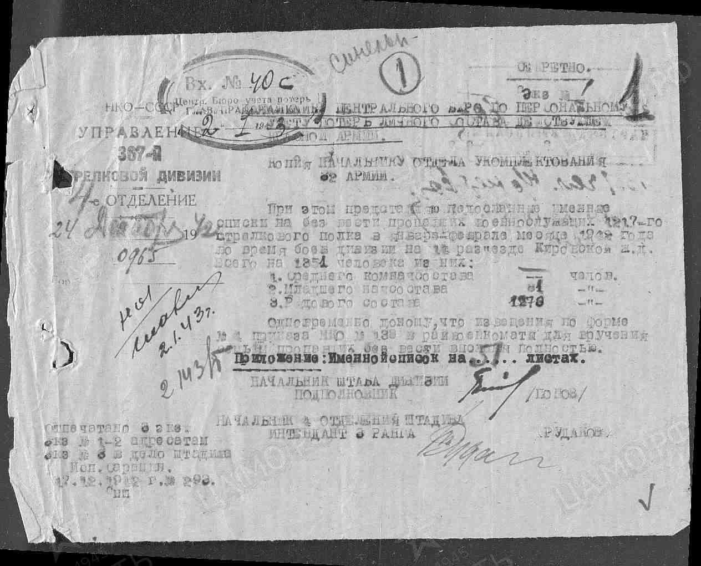
4. Открыть карточку Василия Стрункина на портале «Память Народа»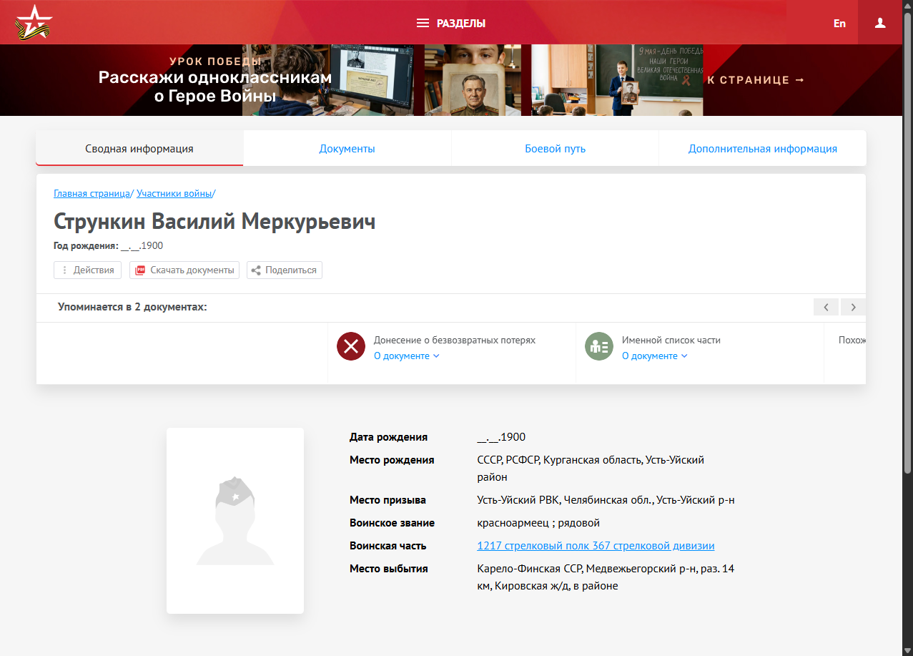
.Великая Отечественная война: Потери 24-го зсп — красноармеец Алексей Андреевич Стрункин · 1942 год (ЦАМО РФ)
ЦАМО РФ, Карточка героя 31261194. Красноармеец Стрункин Алексей Андреевич (1925 г.р., с. Речное). Двоюродный брат деда Саши, сын Андрея Федотовича Стрункина. Погиб/пропал без вести в декабре 1942 года. Открыть документ ЦАМО
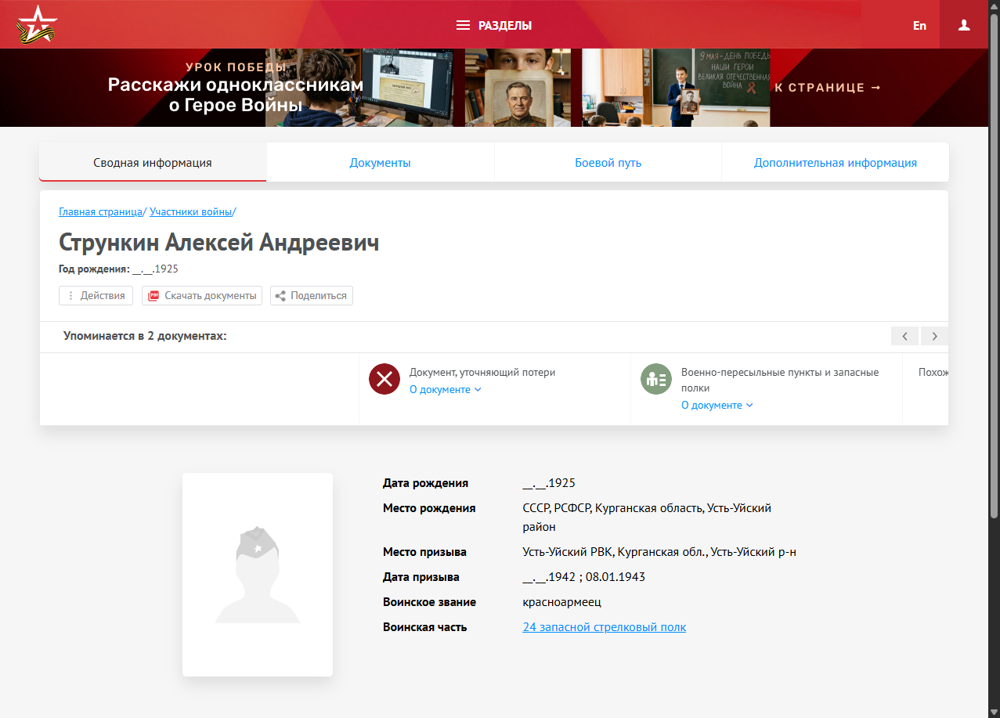
.Брак Феодота Стрункина · 1899 год (ОГАЧО)
ОГАЧО, фонд И-226, опись 1, дело 547, лист 628, запись № 50. Феодот Меркурьевич Стрункин и Евдокия Тимофеева; среди поручителей — Тихон Филиппов Стрункин. Открыть скан записи
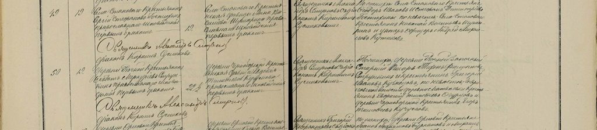
.Рождение Симеона, сына Феодота · 1900 год (ОГАЧО)
ОГАЧО, фонд И-226, опись 1, дело 551, лист 112, запись № 18. Родители — Феодот Меркурьев Стрункин и Евдокия Тимофеева. Открыть скан записи
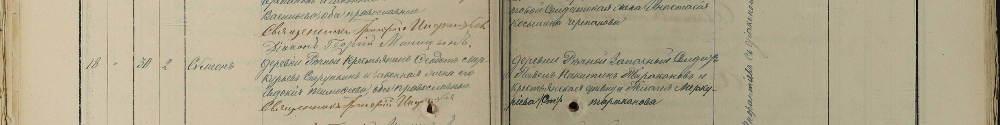
.Документы о рождении Александра и браке Александра с Зинаидой в просмотренной папке не обнаружены. Даты и родственные связи для этих поколений помечены как сведения семейной росписи, а не как вывод из предъявленного первичного акта.